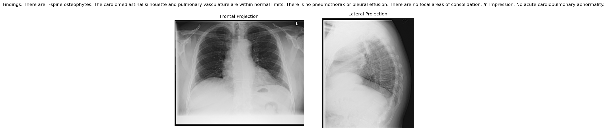
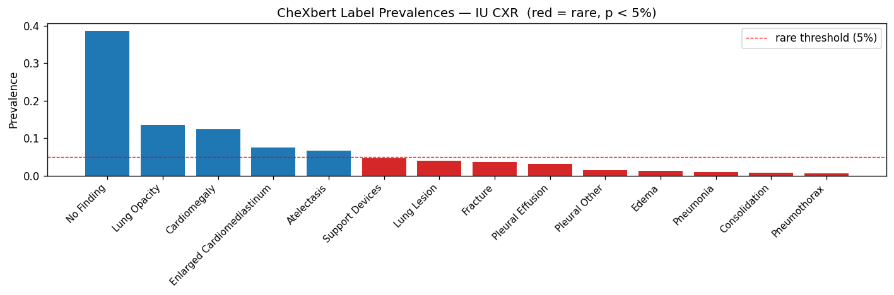
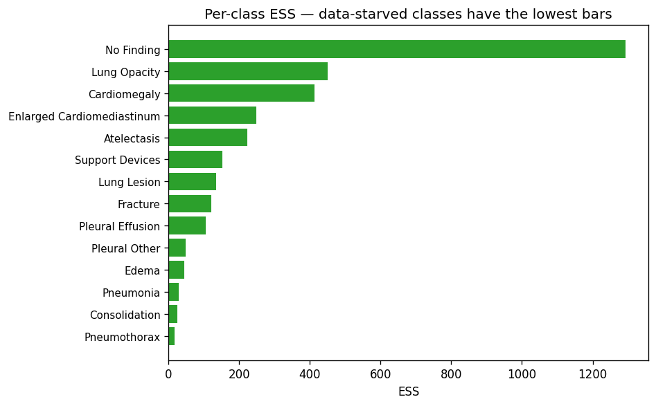

Each section is a checkpoint: run the cell, evaluate the output, then proceed. All logic lives in src/ — this notebook only calls it and displays results.
STEP 1 Load raw CSVs
STEP 2 Join by study (uid)
STEP 3 Integrity check + sample findings text
STEP 4 CheXbert labels ← slow on CPU (~10–20 min); cached after first run
STEP 5 Label prevalences
STEP 6 K_eff and entropy
STEP 7 Class ESS
STEP 8 Tail mass
STEP 9 Co-occurrence matrix
STEP 10 Association rules mining
STEP 11 Label cluster dendrogram
STEP 12 Save figures
Code
import loggingimport yamlfrom pathlib import Pathimport pandas as pdimport numpy as npimport matplotlib.pyplot as pltimport matplotlibmatplotlib.rcParams['figure.dpi'] =120logging.basicConfig(level=logging.INFO, format='%(levelname)s%(message)s')withopen('../params.yaml') as f: params = yaml.safe_load(f)RAW_DIR = Path('../') / params['data']['raw_dir']PROCESSED_DIR = Path('../') / params['data']['processed_dir']FIGURES_DIR = Path('../reports/figures')PROCESSED_DIR.mkdir(parents=True, exist_ok=True)FIGURES_DIR.mkdir(parents=True, exist_ok=True)print('RAW_DIR :', RAW_DIR)print('PROCESSED_DIR:', PROCESSED_DIR)print('Files in raw :', list(RAW_DIR.glob('*')) if RAW_DIR.exists() else'MISSING')
RAW_DIR : ../data/raw
PROCESSED_DIR: ../data/processed
Files in raw : [PosixPath('../data/raw/images'), PosixPath('../data/raw/indiana_projections.csv'), PosixPath('../data/raw/indiana_reports.csv')]
Evaluate: one row per study? frontal + lateral images collapsed to lists?
Code
from src.data.load import build_study_dfdf = build_study_df(reports, projections)print(f'Shape after join: {df.shape} (should be ≈ n_unique_uids x n_cols)')print(f'Unique UIDs in reports: {reports["uid"].nunique()}')print(f'Unique UIDs after join: {df["uid"].nunique()}')print(f'Columns: {df.columns.tolist()}')display(df.head(3))
Shape after join: (3851, 10) (should be ≈ n_unique_uids x n_cols)
Unique UIDs in reports: 3851
Unique UIDs after join: 3851
Columns: ['uid', 'MeSH', 'Problems', 'image', 'indication', 'comparison', 'findings', 'impression', 'frontal', 'lateral']
uid
MeSH
Problems
image
indication
comparison
findings
impression
frontal
lateral
0
1
normal
normal
Xray Chest PA and Lateral
Positive TB test
None.
The cardiac silhouette and mediastinum size ar...
Normal chest x-XXXX.
[1_IM-0001-4001.dcm.png]
[1_IM-0001-3001.dcm.png]
1
2
Cardiomegaly/borderline;Pulmonary Artery/enlarged
Cardiomegaly;Pulmonary Artery
Chest, 2 views, frontal and lateral
Preop bariatric surgery.
None.
Borderline cardiomegaly. Midline sternotomy XX...
No acute pulmonary findings.
[2_IM-0652-1001.dcm.png]
[2_IM-0652-2001.dcm.png]
2
3
normal
normal
Xray Chest PA and Lateral
rib pain after a XXXX, XXXX XXXX steps this XX...
NaN
NaN
No displaced rib fractures, pneumothorax, or p...
[3_IM-1384-1001.dcm.png]
[3_IM-1384-2001.dcm.png]
Code
# Example of image tailored with its disgnosis import matplotlib.pyplot as pltimport matplotlib.image as mpimgsample_data = df.sample(n=1)frontal_path ="../data/raw/images/images_normalized/"+ sample_data['frontal'].iloc[0][0]lateral_path ="../data/raw/images/images_normalized/"+ sample_data['lateral'].iloc[0][0]findings = sample_data['findings'].iloc[0]impression = sample_data['impression'].iloc[0]# 2. Create a side-by-side layout (1 row, 2 columns)fig, axes = plt.subplots(1, 2, figsize=(10, 5))fig.suptitle(f"Findings: {findings} /n Impression: {impression}")axes[0].imshow(mpimg.imread(frontal_path), cmap='gray')axes[0].set_title("Frontal Projection")axes[0].axis('off')axes[1].imshow(mpimg.imread(lateral_path), cmap='gray')axes[1].set_title("Lateral Projection")axes[1].axis('off')plt.tight_layout()plt.show()

Code
# Check how many studies have frontal and/or lateral imagesif'frontal'in df.columns: n_frontal = df['frontal'].apply(lambda x: len(x) >0ifisinstance(x, list) elseFalse).sum()print(f'Studies with frontal image: {n_frontal} / {len(df)}')if'lateral'in df.columns: n_lateral = df['lateral'].apply(lambda x: len(x) >0ifisinstance(x, list) elseFalse).sum()print(f'Studies with lateral image: {n_lateral} / {len(df)}')# Distribution of projection counts per studyproj_counts = projections.groupby('uid')['filename'].count()proj_counts.value_counts().sort_index().rename('n_studies').to_frame()
Studies with frontal image: 3689 / 3851
Studies with lateral image: 3550 / 3851
n_studies
filename
1
446
2
3210
3
181
4
13
5
1
STEP 3 — Integrity check + sample findings text
Evaluate: how many studies are unusable (no findings)? Does the text look clinical?
Code
from src.data.load import validate_integritystats = validate_integrity(df)pd.Series(stats).rename('count').to_frame()
INFO total_studies: 3851
WARNING studies_without_frontal_image: 162
WARNING studies_with_empty_findings: 514
count
total_studies
3851
studies_without_frontal_image
162
studies_with_empty_findings
514
Code
# Drop studies with no findings text (can't be used as generation targets)mask = df['findings'].notna() & (df['findings'].astype(str).str.strip() !='')df_clean = df[mask].reset_index(drop=True)print(f'Before: {len(df)} studies')print(f'After dropping empty findings: {len(df_clean)} studies')print(f'Dropped: {len(df) -len(df_clean)}')
# Read 3 example studies — check text quality and clinical relevancefor i in [0, 1, 2]: row = df_clean.iloc[i]print(f"\n{'='*60}")print(f"UID: {row['uid']}")print(f"Indication : {str(row.get('indication', 'N/A'))[:150]}")print(f"Findings : {str(row['findings'])[:300]}")print(f"Impression : {str(row.get('impression', 'N/A'))[:150]}")
============================================================
UID: 1
Indication : Positive TB test
Findings : The cardiac silhouette and mediastinum size are within normal limits. There is no pulmonary edema. There is no focal consolidation. There are no XXXX of a pleural effusion. There is no evidence of pneumothorax.
Impression : Normal chest x-XXXX.
============================================================
UID: 2
Indication : Preop bariatric surgery.
Findings : Borderline cardiomegaly. Midline sternotomy XXXX. Enlarged pulmonary arteries. Clear lungs. Inferior XXXX XXXX XXXX.
Impression : No acute pulmonary findings.
============================================================
UID: 4
Indication : XXXX-year-old XXXX with XXXX.
Findings : There are diffuse bilateral interstitial and alveolar opacities consistent with chronic obstructive lung disease and bullous emphysema. There are irregular opacities in the left lung apex, that could represent a cavitary lesion in the left lung apex.There are streaky opacities in the right upper lob
Impression : 1. Bullous emphysema and interstitial fibrosis. 2. Probably scarring in the left apex, although difficult to exclude a cavitary lesion. 3. Opacities i
STEP 4 — CheXbert labels
First run: downloads ~400 MB CheXbert model from HuggingFace, then runs BERT over all ~3 k reports. Takes ~10–20 min on CPU. Results are cached to disk.
Subsequent runs: loads instantly from the cache parquet.
Evaluate: does the label matrix look sensible? Are the all-zero rows (no finding) dominant?
Code
from src.data.labels import label_dataframe, CHEXBERT_LABELSLABEL_CACHE = PROCESSED_DIR /'chexbert_labels.parquet'print(f'Cache exists: {LABEL_CACHE.exists()}')print('Running label_dataframe (loading from cache if available)...')df_labeled = label_dataframe( df_clean, uncertain_policy=params['labels']['uncertain_policy'], device=params['labels']['device'], cache_path=LABEL_CACHE,)print(f'\nShape: {df_labeled.shape}')print(f'Label columns added: {CHEXBERT_LABELS}')
INFO Loading cached CheXbert labels from ../data/processed/chexbert_labels.parquet
# Per-label positive countlabel_counts = df_labeled[CHEXBERT_LABELS].sum().sort_values(ascending=False)print('Positive studies per label:')print(label_counts.to_string())
Positive studies per label:
No Finding 1293
Lung Opacity 450
Cardiomegaly 414
Enlarged Cardiomediastinum 249
Atelectasis 224
Support Devices 153
Lung Lesion 134
Fracture 121
Pleural Effusion 105
Pleural Other 49
Edema 44
Pneumonia 30
Consolidation 25
Pneumothorax 17
Code
# Save the labeled dataset so terminal scripts can also use itout = PROCESSED_DIR /'dataset_labeled.parquet'df_labeled.to_parquet(out, index=False)print(f'Saved to {out}')
Saved to ../data/processed/dataset_labeled.parquet
STEP 5 — Label prevalences
Evaluate: how dominated is this dataset by “No Finding”? Which labels are rare?
Code
from src.eda.distribution_audit import compute_prevalenceslabel_matrix = df_labeled[CHEXBERT_LABELS].to_numpy(dtype=np.float32)prevalences = compute_prevalences(label_matrix)print('Label prevalences (fraction of studies):')print(prevalences.sort_values(ascending=False).to_string())
Label prevalences (fraction of studies):
No Finding 0.387474
Lung Opacity 0.134852
Cardiomegaly 0.124064
Enlarged Cardiomediastinum 0.074618
Atelectasis 0.067126
Support Devices 0.045850
Lung Lesion 0.040156
Fracture 0.036260
Pleural Effusion 0.031465
Pleural Other 0.014684
Edema 0.013185
Pneumonia 0.008990
Consolidation 0.007492
Pneumothorax 0.005094
Code
sorted_prev = prevalences.sort_values(ascending=False)colors = ['#d62728'if v <0.05else'#1f77b4'for v in sorted_prev.values]fig, ax = plt.subplots(figsize=(12, 4))ax.bar(range(len(sorted_prev)), sorted_prev.values, color=colors)ax.set_xticks(range(len(sorted_prev)))ax.set_xticklabels(sorted_prev.index, rotation=45, ha='right', fontsize=9)ax.axhline(0.05, color='red', linestyle='--', linewidth=0.8, label='rare threshold (5%)')ax.set_ylabel('Prevalence')ax.set_title('CheXbert Label Prevalences — IU CXR (red = rare, p < 5%)')ax.legend()plt.tight_layout()plt.show()

STEP 6 — K_eff and Shannon entropy
Evaluate: how concentrated is the dataset? K_eff = 1 → one label dominates entirely. K_eff = 14 → all equal.
Code
from src.eda.distribution_audit import compute_keffkeff = compute_keff(prevalences)p = prevalences.values.clip(1e-9)p_norm = p / p.sum()entropy =float(-np.sum(p_norm * np.log(p_norm)))print(f'Shannon entropy H = {entropy:.3f} nats')print(f'K_eff = exp(H) = {keff:.2f} (out of 14 possible)')print()print('Interpretation: the dataset behaves as if there are only')print(f'{keff:.1f} equally-common labels — heavily skewed toward "No Finding".')
Shannon entropy H = 2.005 nats
K_eff = exp(H) = 7.42 (out of 14 possible)
Interpretation: the dataset behaves as if there are only
7.4 equally-common labels — heavily skewed toward "No Finding".
STEP 7 — Per-class ESS
Evaluate: if we up-weight to uniform prevalence, how many effective samples does each rare class have? Low ESS = we don’t have much real signal for that class even with reweighting.
fig, ax = plt.subplots(figsize=(8, 5))ax.barh(range(len(sorted_ess)), sorted_ess.values, color='#2ca02c')ax.set_yticks(range(len(sorted_ess)))ax.set_yticklabels(sorted_ess.index, fontsize=9)ax.set_xlabel('ESS')ax.set_title('Per-class ESS — data-starved classes have the lowest bars')plt.tight_layout()plt.show()

STEP 8 — Tail mass
Evaluate: what fraction of studies only have rare labels (p < 5%)? These studies get almost no gradient signal under standard training.
Code
from src.eda.distribution_audit import compute_tail_masstail_mass = compute_tail_mass(label_matrix)print(f'Tail mass: {tail_mass:.3f} ({tail_mass*100:.1f}% of studies)')print()print('These are the studies the importance-weighted sampler is most')print('important for — they\'re the first to be lost under uniform sampling.')
Tail mass: 0.082 (8.2% of studies)
These are the studies the importance-weighted sampler is most
important for — they're the first to be lost under uniform sampling.
STEP 9 — Label co-occurrence
Evaluate: which labels tend to appear together? Are there clinically expected patterns (e.g. Edema + Pleural Effusion, Consolidation + Pneumonia)?
Computes pairwise directional rules A → B from the label co-occurrence matrix.
Support: P(A ∧ B) — how often both appear together
Confidence: P(B | A) — how likely B is given A
Lift: confidence / P(B) — how much more likely B is given A vs at random (lift > 1 = positive association)
Rules with lift ≫ 1 are the most interesting: they reveal non-trivial clinical co-occurrences beyond what base prevalence would predict. No Finding is excluded (it’s a special label, not a pathology).
These rules form the statistical foundation for the soft diagnostic prior injected in notebook 06.
Code
from itertools import combinations# Exclude 'No Finding' — it's a logical complement, not a pathologyLABELS_PATH = [l for l in CHEXBERT_LABELS if l !='No Finding']lm_path = df_labeled[LABELS_PATH].to_numpy(dtype=np.float32)n_studies =len(lm_path)prev_path = lm_path.mean(axis=0)co_path = (lm_path.T @ lm_path) / n_studiesrules_list = []for i, la inenumerate(LABELS_PATH):if prev_path[i] <0.01:continuefor j, lb inenumerate(LABELS_PATH):if i == j or prev_path[j] <0.01:continue p_ab =float(co_path[i, j]) p_a =float(prev_path[i]) p_b =float(prev_path[j]) conf = p_ab / p_a lift = conf / p_b if p_b >0else0.0 rules_list.append({'antecedent': la,'consequent': lb,'support': round(p_ab, 4),'confidence': round(conf, 4),'lift': round(lift, 4), })rules_eda = pd.DataFrame(rules_list).sort_values('lift', ascending=False)# Strong rules onlystrong_rules = rules_eda[ (rules_eda['confidence'] >=0.25) & (rules_eda['lift'] >=1.50)].reset_index(drop=True)print(f'Total rules : {len(rules_eda)}')print(f'Strong rules : {len(strong_rules)} (conf ≥ 0.25, lift ≥ 1.5)')print()display(strong_rules.head(20))# ── Visualization: confidence and lift for the top 15 rules ───────────────────top15 = strong_rules.head(15).copy()top15['rule'] = top15['antecedent'] +' → '+ top15['consequent']fig, axes = plt.subplots(1, 2, figsize=(14, 5))axes[0].barh(top15['rule'][::-1], top15['confidence'][::-1], color='#1f77b4', alpha=0.85)axes[0].axvline(0.25, color='red', linestyle='--', linewidth=0.8, label='min confidence')axes[0].set_xlabel('Confidence P(B | A)')axes[0].set_title('Top association rules — Confidence')axes[0].legend(fontsize=8)axes[1].barh(top15['rule'][::-1], top15['lift'][::-1], color='#ff7f0e', alpha=0.85)axes[1].axvline(1.0, color='black', linestyle='--', linewidth=0.8, label='lift = 1 (random)')axes[1].axvline(1.5, color='red', linestyle='--', linewidth=0.8, label='min lift')axes[1].set_xlabel('Lift')axes[1].set_title('Top association rules — Lift')axes[1].legend(fontsize=8)plt.suptitle('Association Rules: A → B (No Finding excluded)', fontsize=12)plt.tight_layout()fig.savefig(FIGURES_DIR /'assoc_rules_eda.png', dpi=150, bbox_inches='tight')print('Saved assoc_rules_eda.png')plt.show()
Groups labels by how similarly they co-occur across studies. Distance metric: Jaccard on binary label vectors (symmetric — does not assume direction). Clustering method: average linkage.
Clusters that emerge here correspond to clinical syndromes: a cardiac cluster (Cardiomegaly, Edema, Enlarged Cardiomediastinum), an infection cluster (Pneumonia, Consolidation), etc. This structure motivates using multi-label antecedents in the prompt conditioner (notebook 06).
Code
from scipy.cluster.hierarchy import dendrogram, linkagefrom scipy.spatial.distance import pdist, squareform# Jaccard distance between label occurrence vectors (columns of the binary matrix)# Each label is a binary vector over studies; Jaccard = 1 - |A∩B|/|A∪B|lm_T = lm_path.T.astype(bool) # shape (n_labels, n_studies)def jaccard_dist(a, b): inter = (a & b).sum() union = (a | b).sum()return1.0- inter / union if union >0else1.0dist_condensed = pdist(lm_T, metric=jaccard_dist)Z = linkage(dist_condensed, method='average')fig, ax = plt.subplots(figsize=(11, 5))dg = dendrogram( Z, labels=LABELS_PATH, ax=ax, leaf_rotation=40, leaf_font_size=9, color_threshold=0.70*max(Z[:, 2]),)ax.set_title('Hierarchical Clustering of CheXbert Labels (Jaccard distance, average linkage)', fontsize=12)ax.set_ylabel('Distance')plt.tight_layout()fig.savefig(FIGURES_DIR /'label_dendrogram.png', dpi=150, bbox_inches='tight')print('Saved label_dendrogram.png')plt.show()# Print cluster summary at the chosen cutfrom scipy.cluster.hierarchy import fclustern_clusters =5cluster_ids = fcluster(Z, n_clusters, criterion='maxclust')for cid inrange(1, n_clusters +1): members = [LABELS_PATH[i] for i, c inenumerate(cluster_ids) if c == cid]print(f'Cluster {cid}: {members}')